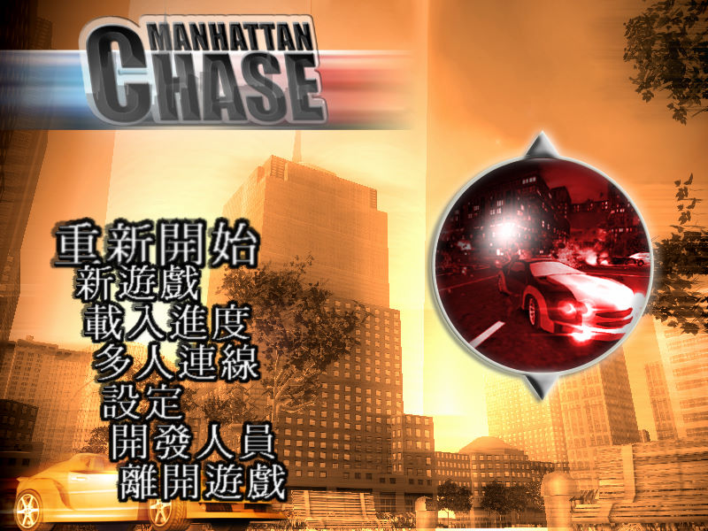
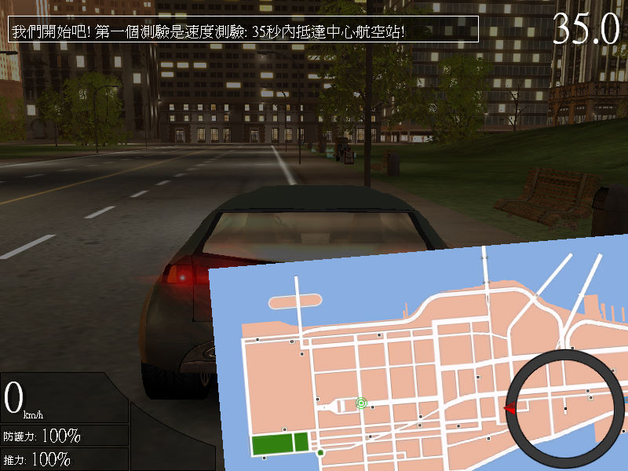

名稱：暗夜極道／曼哈頓追逐／曼哈頓追逐賽 (Manhattan Chase／Vice City: Manhattan，中文／英文版)
簡介：Team6 2004年出品的動作冒險競速遊戲，由昌哲中文化並代理發行，2005年由Denda代
理發行英文版。由於中文版推出的時間比國外英文版更早，因此只具有一個故事線，
不像英文版可在兩個故事線中選擇 [待補]。


保護：無
備註：英文版可選在兩個故事線中選擇一個，繁中版固定選擇右邊的故事線（只有一個）。
檔案：mchasepatch12.rar = 英文1.2更新檔
chs.rar = 繁化檔（使用後無法再選擇故事線）